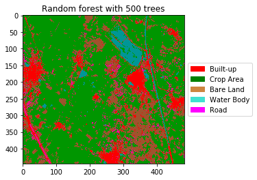
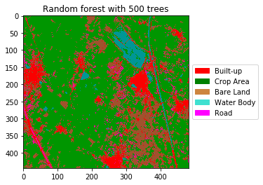

Topographical Feature Extraction Using Machine Learning Techniques from Sentinel-2A Imagery .
The advancement in the satellite technology has made it possible to easily and frequently obtain the satellite images of most of the regions in the Earth. The satellite data contains abundant amount of information which can be very useful for variety of societal applications. However, manual identification of the land cover in a particular area is a very challenging and time-consuming task. we propose a method for classifying the land types from Sentinel 2A imagery using various models like random forest, SVM, Naive Bayes, Decision Tree (CART) and validate which model better classifies them. QGIS software is used to generate training data for the classifier. The analysis reveals that random forest classifier outperforms the rest of the classification methods in terms of better accuracy. This automated approach can be applied to large sets of data, reducing the need for manual labeling.
We have presented a way to classify the land types using Sentinal-2A imagery which gives better accuracy than Landsat imagery because of its 10 m resolution, and we used the FCC satellite image to classify because of the presence of band which has high reflectance to vegetation region and after we used four types of classifiers to classify the input image into 5 classes and we are able to detect bare lands, crop lands, water bodies, built-up regions and road. And among the four classifiers the Random Forest classifier performed well with accuracy of 95.6734 % But random forest is not that much accurate, we can improve the accuracy by creating more training samples for each class. and here the input image is the image where the training samples were created we can also test the other clipped satellite images with the random forest model where the training samples were created from other clipped Sentinal-2A satellite image .
Future work
We can improve our work by detecting the types of crop like wheat paddy etc... in the crop region and also by comparing the same clipped Sentinal-2A image with different dates we can say that which crop is better suitable in that region i.e. crop yield detection, like we want to give this information to the government so that they can suggest the farmers that which crop is better suitable in that region and also we can also analyze the increase in the built-up area and how much area is being unused i.e. Bare land .